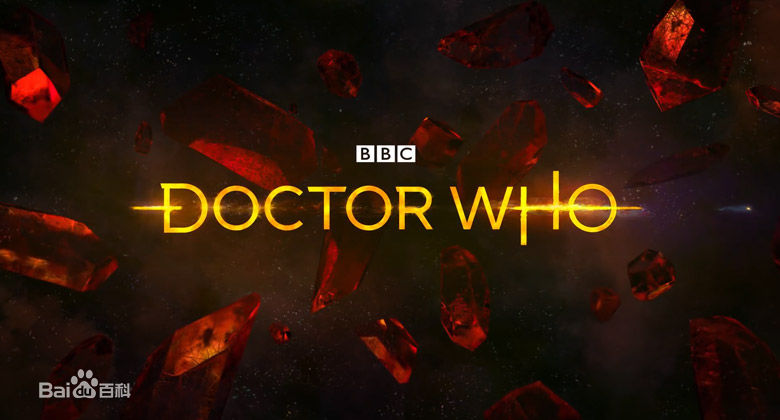
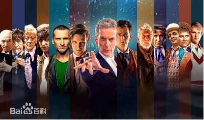

《神秘博士》（Doctor Who）是一部由英国BBC出品的科幻电视剧。故事讲述了一位自称为“博士”（The Doctor）的时间领主用他伪装成20世纪50年代英国警亭的时间机器塔迪斯（TARDIS，即”Time And Relative Dimension(s) In Space“的缩写）与其搭档在时间、空间探索悠游、惩恶扬善、拯救文明、帮助弱小的故事。
博士已经由13位演员扮演。从一位到另一位演员的改变被写成重生，重生前后，博士的外貌会改变，某种程度上，性格也会改变。尽管每个博士的描写方式都不同，有时不同的化身会相遇，他们都会被描绘成同一个角色。
